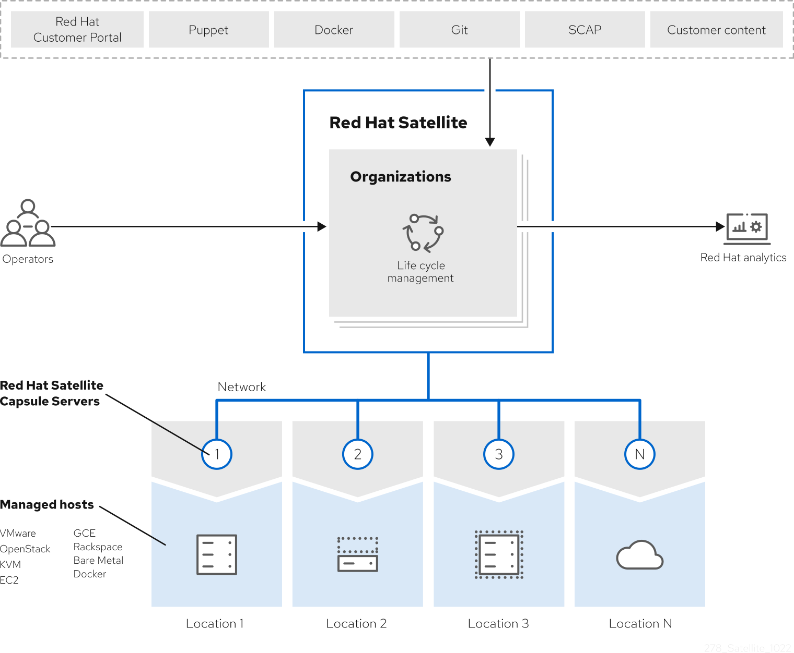
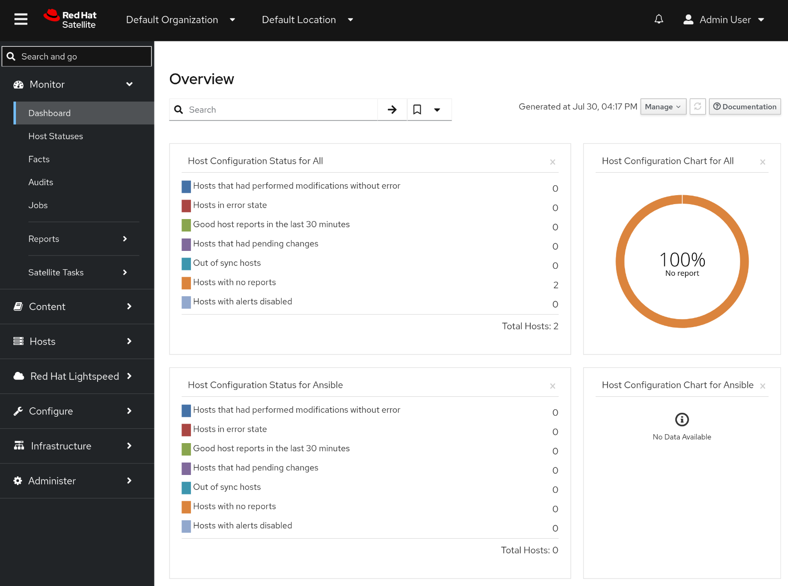

1. Satellite capabilities and use cases
Evaluate whether the core capabilities that Satellite provides meet the needs of your organization.
1.1. Satellite use cases
Red Hat Satellite is a centralized tool for provisioning, content delivery, remote management, and monitoring of multiple Red Hat Enterprise Linux deployments. With Satellite, you can deploy, configure, and maintain your systems across physical, virtual, and cloud environments.
Satellite helps you provision hosts, manage patches and content, strengthen security, and understand infrastructure health across physical, virtual, and cloud environments. You can also benefit from AI-powered assistance by deploying the Model Context Protocol (MCP) server for Satellite, which enables you to interact with your infrastructure using natural language.
Satellite focuses on the following use cases:
- Provisioning
-
Deploy consistently configured hosts on bare metal, virtual machines, and cloud instances from a unified interface.
Satellite automates key stages of the deployment lifecycle, including network configuration, operating system installation, and post-installation tasks. For example, you can define templates, partition layouts, and available software to achieve flexibility in how you deploy hosts.
This approach helps reduce deployment time, standardize the provisioning process, and support scaling of your infrastructure.
- Patch management and content distribution
-
Apply updates to hosts in a consistent, scalable, and repeatable manner. Import, organize, and distribute content to hosts.
NoteIn the context of Satellite, content is defined as the software installed on hosts. For example, you can use Satellite to distribute a broad range of content ranging from packages and errata to container images, Ansible content, and custom file types.
Satellite enables you to import, organize, and distribute content to hosts while staying in control of which versions of content reaches which hosts and when. For example, you can schedule maintenance windows, test updates in staging environments, and roll out patches across your infrastructure with controlled deployment strategies.
This approach provides enhanced control over what software runs in your environment and reduces the manual effort required to keep hosts up to date.
- Security management
-
Reduce the effort required to secure hosts at scale.
Satellite helps you enforce security policies, scan for vulnerabilities, and remediate compliance violations across your infrastructure. For example, you can integrate Satellite with security scanning tools, track compliance against security baselines, and set up procedures to help ensure hosts meet regulatory requirements.
This capability enables centralized security oversight, supports incident response, and helps reduce the attack surface of your hosts.
- Knowledge and analytics
-
Identify potential issues and gain a comprehensive view of your infrastructure.
Satellite collects data from hosts, generates reports on system status and trends, and provides dashboards that visualize infrastructure health. For example, you can monitor resource utilization, track configuration changes, and identify patterns.
This knowledge helps you make informed decisions about your infrastructure and spot potential problems.
- Configuration management
-
Apply configurations to hosts in a consistent and repeatable manner.
Satellite integrates with configuration management tools to define desired state, enforce policies, and remediate drift across your infrastructure. For example, you can manage configurations as code, version control your infrastructure definitions, and automate updates to help keep hosts compliant with organizational standards.
This approach reduces the risk of manual configuration errors and helps maintain consistency across your hosts.
1.2. Content flow in Satellite
Content flow in Red Hat Satellite involves management and distribution of content from external sources to hosts.
Content in Satellite flows from external content sources to Satellite Server. Capsule Servers mirror the content from Satellite Server to hosts.
- External content sources
-
You can configure many content sources with Satellite. The supported content sources include the Red Hat Customer Portal, custom Yum repositories, Git repositories, Ansible collections, container registries, SCAP repositories, or internal data stores of your organization.
- Satellite Server
-
On your Satellite Server, you plan and manage the content lifecycle.
- Capsule Servers
-
By creating Capsule Servers, you can establish content sources in various locations based on your needs. For example, you can establish a content source for each geographical location or multiple content sources for a data center with separate networks.
- Hosts
-
By assigning a host system to a Capsule Server or directly to your Satellite Server, you ensure the host receives the content they provide. Hosts can be physical or virtual.

1.3. Configuration management with Ansible in Satellite
By using Ansible as a configuration management tool in Satellite, you can define the desired state of your hosts and maintain it over time. Satellite combines Ansible features with recurring job runs and centralized orchestration, which helps you manage host configurations consistently.
1.3.1. High-level steps for configuration management with Ansible
You use Ansible roles to define the desired state of the hosts registered to Satellite. Running the roles enforces the configuration.
Configuration management with Ansible involves the following high-level steps:
-
Import Ansible roles into Satellite.
-
Assign specific roles to a host or host group.
-
Optional: Override Ansible variables per host or host group in Satellite.
-
Run the roles on the host or host group.
As a result, your hosts maintain a consistent configuration over time. The Ansible roles become a part of their definition.
|
Note
|
Running an Ansible role on a host triggers a remote execution job in the background but the use case is different. The typical use case for a remote execution job is to run an ad-hoc task or orchestration. The typical use case for configuration management by using Ansible and Ansible roles is long-term state management. |
1.3.2. Red Hat Enterprise Linux System Roles in Satellite
Red Hat Enterprise Linux System Roles is a collection of Ansible roles that provide a configuration interface to remotely manage Red Hat Enterprise Linux servers. Satellite includes Red Hat Enterprise Linux System Roles as pre-installed Ansible roles that you can import and use for configuration management.
The rhel-system-roles package is pre-installed in Capsule Server container images and includes roles for common system management tasks such as certificate management, firewall configuration, kernel settings, logging, network configuration, SELinux management, storage management, and time synchronization.
Support levels for some of the Red Hat Enterprise Linux System Roles might be in Technology Preview. For up-to-date information about support levels and a complete list of available roles, see Red Hat Enterprise Linux System Roles.
To use Red Hat Enterprise Linux System Roles, import them from your Capsule Server using the same process as any other Ansible role.
1.4. Configuration management with Puppet in Satellite
To automate host configurations across your infrastructure and keep them consistent, Satellite integrates with OpenVox server for Puppet-based configuration management. This automation helps you consistently manage configurations of hosts registered to Satellite.
Puppet is a configuration management tool to automate host configurations across your infrastructure. Satellite uses OpenVox server as the Puppet-compatible central server for the integration.
1.4.1. How Puppet integrates with Satellite
Puppet uses a server-agent architecture. OpenVox server communicates with OpenVox agents on hosts registered to Satellite to manage the Puppet configuration of these hosts. Satellite components integrate with that architecture to provide configuration management capabilities in Satellite.
Puppet architecture in Satellite comprises the following components:
- OpenVox server
-
OpenVox server is the central component that stores Puppet configuration definitions in Satellite. It runs on Satellite Server or Capsule Servers.
NotePuppet server is no longer supported for Puppet integration with Satellite. To integrate your Puppet infrastructure with Satellite, you need to use an OpenVox server instead. An OpenVox server is functionally equivalent to a Puppet server.
- OpenVox agent
-
OpenVox agent is a service that communicates with an OpenVox server to manage the configuration of hosts. It runs on hosts registered to Satellite.
NoteAs a legacy alternative, Puppet agent also remains compatible with Satellite for Puppet integration. However, an OpenVox agent is the recommended agent for Puppet integration, and it is functionally equivalent to a Puppet agent. You cannot run both OpenVox agent and Puppet agent on the same host.
- Puppet modules
-
A Puppet module is a collection of classes, manifests, resources, files, and templates. The Puppet modules work as components of host configuration definitions.
- Puppet environments
-
Puppet environments are used to control versions of configuration definitions or to manage variants of the definitions, and to test the definitions before you deploy them on production. You can create multiple Puppet environments.
On each run, the OpenVox agent collects Puppet facts about the host and sends them to the OpenVox server. The OpenVox server forwards those facts to Satellite.
|
Note
|
To list Puppet facts on a host, run the |
Satellite acts as an external node classifier (ENC) for the OpenVox server. Based on the facts and other definitions Satellite receives from the OpenVox server, Satellite constructs the ENC answer to the OpenVox server.
Based on the ENC answer, the OpenVox server compiles a catalog for the host and sends it to the agent.
The agent evaluates the system state on the host. If the agent finds differences between the desired state defined in the catalog and the actual state, known as drifts, it enforces correction of the state of the host.
The agent reports correction results back to the OpenVox server. The OpenVox server receives correction results from the agent and reports them to Satellite.
If the Puppet modules you are using support the use of parameters, you can override parameters of the module by using Smart Class parameters in Satellite. In Satellite, you define the parameters as key-value pairs, which behave similar to host parameters or Ansible variables.
1.4.2. High-level steps for configuration management with Puppet
After you deploy an OpenVox agent on a host, use Satellite to manage Puppet modules, import classes, set parameter overrides, and assign classes to hosts so configuration is applied automatically or on demand.
Configuration management with Puppet involves the following high-level steps:
-
Managing Puppet modules on the OpenVox server by installing and updating them.
-
Importing Puppet classes and environments from Puppet modules into Satellite.
-
Optional: Creating config groups from Puppet classes.
-
Configuring overrides of Smart Class parameters on various levels.
-
Assigning Puppet classes or config groups to host groups or individual hosts.
-
Configuring intervals for runs of the OpenVox agent on hosts and for configuration enforcement runs of the OpenVox server.
-
Monitoring configuration management using reports in the Satellite web UI.
-
Configuring email notifications.
After assigning Puppet classes or config groups, Satellite runs configuration management automatically in the configured intervals to enforce Puppet configuration on your hosts, or you can initiate it manually on demand with the Run Puppet Once feature.
1.4.3. OpenVox versions supported for integration with Satellite
Before you begin with the Puppet integration, review which versions of the OpenVox server and OpenVox agent are supported for integration with Satellite.
OpenVox Server 8 is supported on Satellite Server and Capsule Servers.
|
Important
|
The Puppet modules you use must be compatible with the OpenVox Server version you run. |
OpenVox Agent 8 is supported on hosts registered to Satellite.
Additionally, Puppet agent 7 remains compatible with OpenVox in Satellite as a legacy alternative. Hosts registered to Satellite that run Puppet agent 7 can still integrate with the OpenVox implementation in Satellite. However, Puppet agent 7 is end of life. Red Hat recommends to use OpenVox agent 8.
2. Satellite architecture and components
As you are evaluating Satellite for your organization, understanding the roles and relationships of major components helps you determine what infrastructure to deploy and how components interact.
2.1. Major Satellite components
A typical Satellite deployment consists of the following components: a Satellite Server, Capsule Servers, and hosts that receive content and configuration from Satellite Server and Capsule Servers.
- Satellite Server
-
Satellite Server is the central component of your Satellite deployment.
A typical Satellite deployment includes one Satellite Server on which you perform the following operations:
-
Content lifecycle management
-
Configuration of Capsule Servers
-
Configuration of hosts
-
Host provisioning
-
Patch management
-
Subscription management
Satellite Server delegates content distribution, host provisioning, and communication to Capsule Servers. Satellite Server itself also includes a Capsule.
Satellite Server also contains a fine-grained authentication system. You can grant Satellite users permissions to access precisely the parts of the infrastructure for which they are responsible.
-
- Capsule Server
-
With Capsule Servers, you can extend the reach and scalability of your Satellite deployment. Capsule Servers provide the following functionalities in a Red Hat Satellite deployment:
-
Running localized services to discover, provision, control, and configure hosts.
-
Mirroring content from Satellite Server to establish content sources in various geographical or logical locations. By registering a host to a Capsule Server, you can configure this host to receive content and configuration from the Capsule in their location instead of from the central Satellite Server.
By using content views, you can specify the exact subset of content that Capsule Server makes available to hosts.
-
- Hosts in Satellite
-
A host is any Linux client that Red Hat Satellite manages. Hosts can be physical or virtual.
You can deploy virtual hosts on any platform supported by Red Hat Satellite, such as Amazon EC2, Google Compute Engine, KVM, libvirt, Microsoft Azure, OpenStack, Rackspace Cloud Services, or VMware vSphere.
With Satellite, you can manage hosts at scale, including monitoring, provisioning, remote execution, subscription management, content management, and configuration management. You can also group hosts by using features such as host groups and host collections.
2.2. Capsule Server features
Capsule Servers provide local host management services and can mirror content from Satellite Server.
To mirror content from Satellite Server, Capsule Servers provide the following functionalities:
- Repository synchronization
-
Capsule Servers pull content for selected lifecycle environments from Satellite Server and make this content available to the hosts they manage.
- Content delivery
-
Hosts configured to use Capsule Server download content from that Capsule rather than from Satellite Server.
- Host action delivery
-
Capsule Server executes scheduled actions on hosts.
- Red Hat Subscription Management (RHSM) proxy
-
Hosts are registered to their associated Capsule Servers rather than to the central Satellite Server or the Red Hat Customer Portal.
You can use Capsule to run the following services for infrastructure and host management:
- DHCP
-
Capsule can manage a DHCP server, including integration with an existing solution, such as ISC DHCP servers, Active Directory, and Libvirt instances.
- DNS
-
Capsule can manage a DNS server, including integration with an existing solution, such as ISC BIND and Active Directory.
- TFTP
-
Capsule can integrate with any UNIX-based TFTP server.
- Realm
-
Capsule can manage Kerberos realms or domains so that hosts can join them automatically during provisioning. Capsule can integrate with an existing infrastructure, including Identity Management and Active Directory.
- Puppet server
-
Capsule can act as a configuration management server by running an OpenVox server.
- Puppet Certificate Authority
-
Capsule can integrate with the Puppet certificate authority (CA) to provide certificates to hosts.
- Baseboard Management Controller (BMC)
-
Capsule can provide power management for hosts by using the Intelligent Platform Management Interface (IPMI) or Redfish standards.
- Provisioning template proxy
-
Capsule can serve provisioning templates to hosts.
- OpenSCAP
-
Capsule can perform security compliance scans on hosts.
- Remote execution (REX)
-
Capsule can run remote job execution on hosts.
You can configure a Capsule Server for a specific limited purpose by enabling only selected features on that Capsule. Common configurations include the following:
- Content Capsules: Pulp
-
Capsules with this service provide content synchronized from Satellite Server to hosts.
- Configuration Capsules: Pulp + Puppet + PuppetCA
-
Capsules with these services provide content and run configuration services for hosts.
- Capsules with DNS + DHCP + TFTP + Pulp + Puppet + PuppetCA
-
Capsules with these services provide a full set of Capsule features. By configuring a Capsule with all these features, you can isolate hosts assigned to that Capsule by providing a single point of connection for the hosts.
2.3. Remote execution in Satellite
With remote execution, you can run jobs on hosts from Capsules by using shell scripts or Ansible roles and playbooks.
Use remote execution for the following benefits in Satellite:
-
Run jobs on multiple hosts at once.
-
Use variables in your commands for more granular control over the jobs you run.
-
Use host facts and parameters to populate the variable values.
-
Specify custom values for templates when you run the command.
Communication for remote execution occurs through Capsule Server, which means that Satellite Server does not require direct access to the target host, and can scale to manage many hosts.
To use remote execution, you must define a job template. A job template is a command that you want to apply to remote hosts. You can execute a job template multiple times.
Satellite uses ERB syntax job templates.
By default, Satellite includes several job templates for shell scripts and Ansible.
2.4. Key open source components of Satellite
Satellite consists of several open source projects integrated with each other.
- Foreman
-
Foreman is a lifecycle management application for physical and virtual systems. It helps manage hosts throughout their lifecycle, from provisioning and configuration to orchestration and monitoring.
- Katello
-
Katello is a plugin of Foreman that extends Foreman capabilities with additional features for content, subscription, and repository management. Katello enables Satellite to subscribe to Red Hat repositories and to download content.
- Candlepin
-
Candlepin is a service for subscription management.
- Pulp
-
Pulp is a service for repository and content management.
3. Satellite security capabilities
Evaluate Satellite security features including certificates, authentication, and network isolation to select appropriate protections for your environment.
3.1. Security hardening features in Satellite
Satellite supports multiple security mechanisms for additional layers of protection. Understanding these capabilities helps you evaluate how Satellite can support the security requirements of your organization.
You can use the following security capabilities in Satellite to enhance the security of your deployment:
- Federal Information Processing Standards (FIPS) Mode
-
Satellite Server and Capsule Servers can run on FIPS-enabled Red Hat Enterprise Linux hosts. Note that Satellite itself is not FIPS-certified.
FIPS mode enforces the use of validated cryptographic algorithms and modules. Enabling FIPS mode ensures that all cryptographic operations within the system adhere to strict security standards.
NoteSatellite supports DEFAULT and FIPS crypto-policies. The FUTURE crypto-policy is not supported for Satellite Server and Capsule Server installations.
If you want to run Satellite Server or Capsule Server on a FIPS-enabled host, FIPS must be enabled on the host before installing. You cannot enable FIPS mode on Satellite Server or Capsule Server after installation.
NoteIf you manage FIPS-enabled hosts, you must also run Satellite Server and Capsule Servers in FIPS mode. If the server does not run in FIPS mode in this situation, you might experience unexpected behavior. For example, the hosts might not be able to run remote execution jobs from the server.
- File Access Policy Daemon (
fapolicyd) -
Satellite Server and Capsule Servers can run on hosts that have the
fapolicydservice enabled.The
fapolicyddaemon helps prevent unauthorized code execution and enhances system integrity by enforcing file access policies.You can enable or disable
fapolicydon your Satellite Server and Capsule Servers at any time. - Post-Quantum Cryptography (PQC)
-
Satellite can synchronize and distribute Red Hat Enterprise Linux 10 content signed with the Module-Lattice-Based Digital Signature Standard (ML-DSA). ML-DSA is a quantum-resistant cryptographic signature algorithm designed to protect content integrity against potential attacks from quantum computers.
Red Hat does not currently support full PQC compatibility for Satellite.
- Security-Enhanced Linux (SELinux)
-
Satellite Server and Capsule Servers must be run on hosts with SELinux enabled.
The SELinux collection of security modules enforces policies that define which processes can access specific system resources, providing protection against unauthorized access and exploitation.
To maintain a high-security environment, Red Hat recommends running Satellite with SELinux in enforcing mode. This ensures that access control policies are strictly enforced and minimizes the risk of privilege escalation or unauthorized actions.
In addition to these security capabilities, regularly updating security policies and configurations, as well as monitoring system logs, can help detect and respond to potential threats effectively on both Satellite Server and Capsule Server.
For certain use cases, Satellite Server must meet security compliance requirements. You can use Security Content Automation Protocol (SCAP) to scan your system for security policy compliance.
3.2. Authentication methods in Satellite
The authentication methods you can configure depend on the authentication source you are using. If the native authentication features provided by Satellite are not sufficient for your use case, use this information to decide which external authentication provider best suits your requirements.
Red Hat Satellite includes native support for authentication with a username and password. If you require additional methods of authentication, configure your Satellite Server to use an external authentication source.
| Username and password | Single sign-on (SSO) | One-time password (OTP) | Time-based one-time password (TOTP) | |
|---|---|---|---|---|
Active Directory (direct integration) |
Yes |
Yes |
No |
No |
Identity Management |
Yes (Linux and Active Directory users) |
Yes (Linux users only) |
No |
No |
Red Hat Single Sign-On |
Yes |
Yes |
Yes |
Yes |
LDAP |
Yes |
No |
No |
No |
4. Administration tools for Satellite
Satellite offers multiple tools for administrators to manage the deployment. Understanding the available administration tools helps you select the approach that fits your workflow and automation needs.
4.1. Satellite web UI for management from your browser
You can manage and monitor your Satellite infrastructure from a browser with the Satellite web UI. Satellite supports recent versions of the Mozilla Firefox and Google Chrome browsers.
The Satellite web UI and command-line interface support English, French, Japanese, Korean, and Simplified Chinese.

4.2. Hammer CLI for management from the command line
You can configure and manage your Satellite Server with CLI commands by using Hammer.
Using Hammer has the following benefits:
-
Create shell scripts based on Hammer commands for basic task automation.
-
Redirect output from Hammer to other tools.
-
Use the
--debugoption with Hammer to test responses to API calls before applying the API calls in a script. For example:hammer --debug organization list.
To issue Hammer commands, a user must have access to your Satellite Server.
|
Note
|
To ensure a user-friendly and intuitive experience, the Satellite web UI takes priority when developing new functionality. Therefore, some features that are available in the Satellite web UI might not yet be available for Hammer. |
In the background, each Hammer command first establishes a binding to the API, then sends a request. This can have performance implications when executing a large number of Hammer commands in sequence. In contrast, scripts that use API commands communicate directly with the Satellite API and they establish the binding only once.
4.3. Satellite API for automation and integration
Integrate with enterprise systems, automate repetitive tasks, and manage your infrastructure programmatically using the resource-based REST model of the Satellite API. You can use any HTTP client to interact with Satellite.
Using the REST API has the following benefits:
-
Broad client support – any programming language, framework, or system with support for HTTP protocol can use the API.
-
Self-descriptive – client applications require minimal knowledge of the Satellite infrastructure because users discover many details at runtime.
-
Resource-based model – the resource-based REST model provides a natural way to manage a virtualization platform.
You can use the REST API to perform the following tasks:
-
Integrate with enterprise IT systems.
-
Integrate with third-party applications.
-
Perform automated maintenance or error checking tasks.
-
Automate repetitive tasks with scripts.
Scripts based on API commands communicate directly with the Satellite API, which makes them faster than scripts based on Hammer commands or Ansible Playbooks relying on modules within redhat.satellite.
|
Important
|
API commands differ between versions of Satellite. When you prepare to upgrade Satellite Server, update all the scripts that contain Satellite API commands. |
4.4. Satellite Ansible Collection
Satellite Ansible Collection is a set of Ansible modules that interact with the Satellite API. You can use these modules to automate many aspects of Satellite administration.
Modules from the Satellite Ansible Collection are provided by the ansible-collection-redhat-satellite package.
Before you can use the modules, you must install the package on the system where you run your playbooks.
Using the modules, you can write playbooks to automate the administration of your Satellite.
4.5. MCP server for AI-powered assistance
Satellite provides a Model Context Protocol (MCP) server so that you can query and manage your Satellite inventory from MCP-compatible AI applications by using natural language.
You deploy the MCP server from a container image that Red Hat provides and connect it to the AI application that runs your MCP client. The MCP server accesses Satellite with your credentials, so your MCP client cannot obtain data that you do not have permission to access.
By default, the MCP server is read-only. You can query your inventory and generate reports from it, for example, a report of all subnets and the hosts that are assigned to them.
When you start the MCP server, you can also grant it permissions to change your Satellite. For example, you can start remote execution jobs on your hosts, and publish and promote content views.
4.6. Automated installation with Kickstart
You can automate the installation process of a Satellite Server or Capsule Server by creating a Kickstart file that contains all the information that is required for the installation.
When you run a Red Hat Satellite Kickstart script, the script performs the following actions:
-
It specifies the installation location of a Satellite Server or a Capsule Server.
-
It installs the predefined packages.
-
It installs Subscription Manager.
-
It uses Activation Keys to subscribe the hosts to Red Hat Satellite.
-
It installs Puppet, and configures a
puppet.conffile to indicate the Red Hat Satellite or Capsule instance. -
It enables Puppet to run and request a certificate.
-
It runs user defined snippets.
4.7. Satellite API compared to Hammer CLI
Hammer serves as a human-friendly interface to Satellite API. Use Hammer for interactive tasks and testing API calls, but use the API directly for better performance when executing many commands in scripts.
For example, to test responses to API calls before applying them in a script, use the --debug option to inspect API calls that Hammer issues: hammer --debug organization list.
In the background, each Hammer command first establishes a binding to the API, then sends a request. This can have performance implications when executing a large number of Hammer commands in sequence. In contrast, a script communicating directly with the API establishes the binding only once.